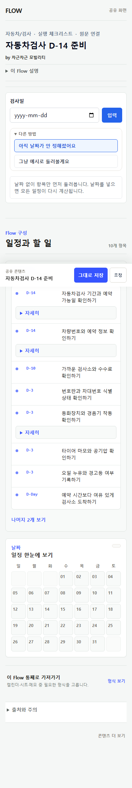
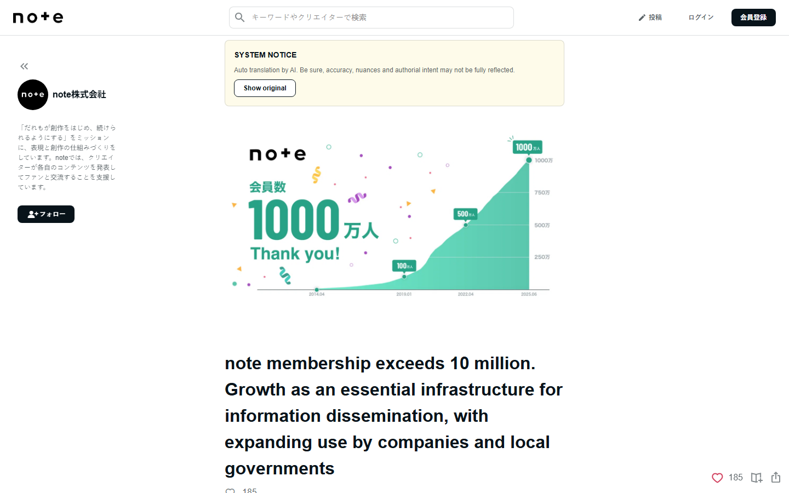

FlowMe Strategy · 2026.07.21 revised CEO / 임원용 · 전략 가설
사람이 없는 초기에는 위키를 열지 말고 , 첫 10명의 원본을 함께 실행 자산으로 만든다
FlowMe가 먼저 제작을 돕고, 제작자가 승인·배포하며, 실제 사용자는 작은 수정부터 제안하는 방식이 가장 현실적이다.
기존 원본을 대신 Flow로 제작 → 제작자 승인과 링크 부착 → 사용자가 실행 → 작은 수정 제안 → 제작자가 다음 버전 승인
68 전체 후보 플랫폼
22 같은 기준으로 비교
12 성장 원리 상세 분석
A+C+D 권고 공급 조합
전략 가설 FlowMe 관찰 사용자·제작자 성과는 아직 0건이다. 이 보고서는 모집·실험 결과가 아니라 실행 전 의사결정 자료다.
01 / 17
Conclusion in one page FlowMe가 처음 만들 생태계
FlowMe는 새 계획 앱이 아니라, 제작자의 원본을 사용자의 실제 행동으로 옮기는 실행 연결층에서 시작한다
제작자는 원본과 독자를 잃지 않고, 사용자는 복잡한 계획을 새로 짜지 않으며, FlowMe는 그 사이의 구조·출처·버전·사용 흔적을 쌓는다.
제작자
경험을 이미 설명한 사람
블로그·영상·커뮤니티에 따라 할 수 있는 원본을 갖고 있다.
원본 예시 가설
→
FLOWME 원문 연결 · 제작자 승인
by 주말한칸 · 가상 제작자
아이와 자연사박물관 가기
날짜는 나중에 이번 토요일 가족과 공유
1 가고 싶은 곳에 먼저 저장
2 원문에서 제시한 준비·확인 항목 보기
3 날짜가 정해지면 일정과 역할만 추가
→
사용자
주말 계획을 미루던 부모
지금은 저장만 하고, 날짜가 정해진 뒤 캘린더와 체크리스트로 이어간다.
지금 버킷리스트 + 원문 링크
날짜 확정 후 캘린더 + 준비 체크
실행 후 막힌 항목 한 건 제안
원본 채널 YouTube · Blog · Cafe · Newsletter
제작 지원 FlowMe가 구조화하고 제작자가 승인
FlowMe 화면 최소 입력 · 실행본 미리보기 · 출처
기존 도구 Calendar · Todo · Memo · Sheet
다음 버전 사용 신호와 작은 제안을 제작자가 반영
결론 P0는 공개 위키나 새 캘린더가 아니다. 제작자 승인 Flow와 바로 쓸 수 있는 결과물까지다.
02 / 17
Concrete user example 날짜가 없는 관심이 행동으로 바뀌는 과정
“아이와 박물관 가야지”를 먼저 저장하고,
처음부터 날짜·시간·준비물을 모두 묻지 않는다. 사용자가 지금 결정할 수 있는 것만 받고, 원문의 실행 정보를 잃지 않는 것이 핵심이다.
가상 원본 예시 제작자 콘텐츠 “7살 아이와 자연사박물관 반나절”
장소와 기대 경험 원문 속 준비·주의 제작자 이름과 링크 →
사용자 입력 2개 내 상황에 적용 날짜 미정 · 아이 1명
버킷리스트에 먼저 저장 원문 확인 항목은 그대로 유지 날짜가 생기면 일정만 계산 →
실행 결과물 사용자가 받는 것 지금과 나중을 분리
지금: 장소 + 원문 메모 나중: 캘린더 일정 당일: 준비 체크리스트
아이와 박물관 날짜 미정으로 저장 → 날짜 확정 후 일정 기본: 버킷리스트
평일 5일 저녁 식단 다음 월요일 선택 → 장보기 목록 + 제작자 레시피 링크 기본: 체크리스트 + 메모
이사 D-30 이사일 입력 → 역산 일정 + 가족 역할 + 완료 확인 기본: 캘린더 + 체크

현재 제품에 이미 있는 날짜 미정 패턴 화면은 자동차검사 예시지만, 같은 입력 방식을 박물관·여행·취미의 ‘나중에 할 일’에 적용할 수 있다. 실제 사용자 검증은 아직 없다.
현재 화면 P25 제품 검토 캡처. 박물관·식단 예시는 제품 방향을 설명하기 위한 가설이며 발행 완료 콘텐츠가 아니다.
03 / 17
Executive decision 오늘 결정할 세 가지
결정은 “커뮤니티를 만들까?”가 아니라, 처음 누구에게 어떤 권한과 가치를 줄지다
세 항목을 승인하면 개발 범위를 넓히지 않고도 제작자 공급과 사용자 기여를 같은 루프로 검증할 수 있다.
1 초기 공급 방식 A+C+D 결합 승인
제작 대행 + 선별 제작자·경험자 + 작은 기여 큐
대안: FlowMe 내부 편집만으로 채우기
2 첫 제작자 작은 실행형 제작자부터
원본 3개 이상, 독자 질문, 링크 부착·검토 의지가 있는 사람
대안: 유명인 또는 불특정 공개 모집
3 처음 여는 기여 작은 제안까지만
URL·낡은 정보·출처·준비물·항목 한 개 제안
대안: 누구나 기준본 직접 편집
승인안: 제작자는 기준본을 소유하고, 사용자는 개인 실행본과 변경 제안을 가진다.
근거와 대안별 위험: 초기 참여 운영 모델 JSON
04 / 17
Starting point 현재 FlowMe의 실제 위치
실행 도구의 뼈대는 있지만, 제작자가 들어오고 계속 고칠 이유는 아직 제품으로 연결되지 않았다
44 유지 후보 현재 테스트 계약상 keep
105 보강 필요 현재 테스트 계약상 fix
442+ 미리보기 전용 공개 품질 Flow로 세면 안 됨
0 관찰 사용자 자동 QA는 사람의 가치 검증이 아님
이미 있음 URL·메모 진입, 저장·수정·완료, 캘린더·체크리스트·표·메모 결과물, 출처·버전 기본 구조
아직 없음 제작자 승인·소유권 요청, 원문에 붙이는 링크 가치, 변경 제안 큐, 제작자용 반응 요약
오해 금지 기존 24개 P0 구성은 공개 카탈로그가 아니라 콘텐츠 구조를 배우기 위한 상한 시나리오다.
이번 범위 제품 코드를 바꾸지 않고 공급·참여·검토 순서와 다음 세션의 요구사항만 확정한다.
저장소 사실 콘텐츠 테스트 계약 , STATUS . 수치는 실행 시점에 다시 확인해야 한다.
05 / 17
Research funnel 예시 네 곳이 아니라 전체 후보에서 선별
68개를 아홉 가지 참여 구조로 모으고, FlowMe의 공급 문제를 바꾸는 22개만 같은 기준으로 비교했다
68 전체 후보 글로벌·한국·일본·중국의 지식, 커뮤니티, 제작자, 템플릿, 자동화
28 1차 선별 기여 단위·초기 공급·즉시 가치·운영 근거가 있는 대상
22 100점 비교 기여 가치 20 · 시드 15 · 작은 기여 15 · 제작자 가치 15 등
12 상세 사례 초기 성장, 현재 성장, 정체·실패 위험을 함께 설명할 수 있는 사례
협업 지식 Wikipedia · NamuWiki · OSM · Wikidata
질문·답변 지식iN · Stack Overflow · Quora · Zhihu
실용 가이드 wikiHow · Instructables · Cookpad · eHow
실시간 커뮤니티 Reddit · 뽐뿌 · Hacker News · NAVER Cafe
경험·리뷰 오늘의집 · Local Guides · Strava · AllTrails
제작자 발행 Substack · note · YouTube · Brunchstory
템플릿·리믹스 GitHub · Notion · Figma · Canva · Hugging Face
지역·관심 집단 Product Hunt · Disquiet · Danggeun · Discord
워크플로·AI n8n · Zapier · Make · GPT Store · Poe
전체 명단·분류·점수: 플랫폼 후보 원장 JSON . 점수는 시장 규모가 아니라 FlowMe 초기 공급 적합도다.
06 / 17
Participation sequence 첫 10명 → 첫 100건 → 첫 1,000건
처음 100명은 ‘Flow 작가 100명’이 아니라, 실제 사용에서 나온 작은 기여 100건이어야 한다
10명 선별 제작자·경험자 5~8명 원본 제공·승인 2~3명 편집·검토 운영 각 1~2개를 함께 제작 증명: 원문 링크 부착과 승인 비용
→
100건 작은 사용·수정 신호 저장·내보내기·완료 낡은 정보·깨진 링크 신고 준비물·항목 한 개 제안 증명: 제안 수락률과 처리 시간
→
1,000건 주제별 관리 루프 제작자 원문·검색 유입 검증된 큐레이터 셀 권한 위임과 업데이트 운영 증명: 최신성·분쟁·도움 받은 사람
사람 수보다 먼저 세어야 할 것: 원본 승인 → 실행 결과물 사용 → 작은 제안 처리 → 다음 버전 개선
가설 수량은 단계의 의미를 설명하는 운영 기준이며 달성 예측이 아니다.
07 / 17
Early-growth evidence 초기 성장의 실제 기록
공통점은 대규모 기능이 아니라, 좁은 첫 집단과 운영자의 직접 개입이었다
Product Hunt 창업자 기록 제품 전 협업 이메일 → 첫날 30명 → 한 주 100명 → 20일 2,000명. 핵심은 기존 관계, 수동 선별, 개인 연락이었다. 원문
Product Hunt 수십 명을 협업 이메일에 초대하고 첫 가입자·기여자를 직접 돌봄
wikiHow 첫 달 약 2천 방문, 편집 거의 0. 창업자가 모든 편집자에게 답하고 변경을 검토
Wikipedia 느린 전문가 심사의 Nupedia 옆에서 작은 열린 편집을 허용
OpenStreetMap 내 지역의 도로·장소 한 건을 고치면 즉시 모두의 지도가 좋아짐
FlowMe가 그대로 가져올 것 첫 제작자 5~8명을 직접 고르고, 원본 1~2개를 대신 구조화하고, 승인과 배포까지 사람이 책임진다.
가져오지 않을 것 Reddit 초기의 가짜 계정·가짜 콘텐츠 시딩. 활동처럼 보일 수 있어도 FlowMe의 핵심 자산인 출처·제작자 신뢰를 훼손한다.
wikiHow 초기 수치는 WIRED 창업자 인터뷰 , OSM은 공식 역사 , Reddit 반례는 창업자 회고 보도 .
08 / 17
Korea and Asia 한국·아시아에서 얻을 수 있는 것
한국형 출발점은 익명 대형 커뮤니티가 아니라, 원본 제작자와 생활 상황 커뮤니티의 연결이다

note: 기록의 즉시 가치에서 수익·기관 발행으로 확장 2025년 회원 1천만, MAU 7,359만, 게시물 6천만. 회원 3년 2배, 기업 계정 5배. 공식 발표
오늘의집: 경험 콘텐츠에서 상품·행동으로 연결 사용자 공간 콘텐츠와 상품 태그를 묶어 영감이 구매와 생활 실행으로 이어지게 한다. 공식 서비스 소개
지식iN 구체적 질문이 공급을 호출한다. 20주년 누적 문답 8억 건.
공식 수치 NAVER Cafe 육아·지역처럼 상황이 좁은 첫 배포 채널 후보. 데이터 소유는 분리한다.
유통 채널 NamuWiki 작은 편집은 참고하지만 익명 기준본 덮어쓰기와 출처 품질은 채택하지 않는다.
초기 근거 제한 뽐뿌 가격·마감·현장 정보 갱신은 유용하다. 다만 초기 코호트의 공식 근거는 확보하지 못했다.
초기 근거 제한
지식iN: NAVER 20주년 발표 . NamuWiki·뽐뿌는 후보군에 포함했지만 공개 검증 가능한 초기 성장 자료가 부족해 인과 주장을 하지 않는다.
09 / 17
Current growth 2023~2026 성장 신호가 두 개 이상인 사례
지금 성장하는 플랫폼도 ‘콘텐츠 양’보다 재사용 가능한 자산, 원본 소유, 실제 실행을 중심으로 커지고 있다
GitHub 1.8억+ 개발자 · 2025 신규 3,600만+ · 공개 기여 11.2억 Reddit Q4 DAUq 1.214억, +19% · 2025 매출 22억 달러, +69% n8n 2025 사용자 6배 · 매출 10배 · 워크플로 템플릿 10,802개 note 회원 3년 2배 · 기업 계정 5배 · MAU 7,359만 Canva 2025 MAU 2.6억 · 연매출 35억 달러 Hugging Face 사용자 1,300만 · 모델 200만+ · 데이터셋 50만+ · 모두 거의 2배 Substack 유료 구독 500만+ · iOS 결제 출판물 3만 · 앱이 유료 구독 30%+
막대는 규모 순위가 아니다. 서로 다른 지표를 한 단위처럼 비교하지 않고, 최근 성장 신호가 두 종류 이상 확인됐다는 강도만 나타낸다.
주요 출처: GitHub Octoverse 2025 · Reddit FY2025 · n8n 공식 발표 · Hugging Face 2026 . 전체 수치와 한계는 근거 원장 .
10 / 17
22-platform comparison 100점은 FlowMe 초기 공급 적합도
상위권은 실행 가능한 자산을 복제·수정하고, 원본 소유자와 변경 제안을 분리하는 플랫폼이다
# 플랫폼 점수 핵심 상태
1 GitHub 84 현재 성장
2 n8n Templates 84 현재 성장
3 Product Hunt 81 초기 기록
4 Notion Marketplace 80 현재 규모
5 note 78 현재 성장
6 Substack 77 현재 성장
7 wikiHow 76 초기 기록
8 Figma Community 76 현재 규모
9 Canva Creators 76 현재 성장
10 Wikipedia 75 역사적 성공
11 OpenStreetMap 74 역사적 성공
# 플랫폼 점수 핵심 상태
12 Hugging Face 74 현재 성장
13 NAVER 지식iN 73 역사적 성공
14 Stack Overflow 73 AI 압력
15 Ohouse 72 현재 규모
16 Local Guides 71 성숙
17 YouTube 71 현재 규모
18 Instructables 70 성숙
19 Cookpad 70 성숙
20 Reddit 67 현재 성장
21 Disquiet 67 근거 보강
22 NAVER Cafe 62 성숙
가장 중요한 축 기여자 즉시 가치 20점 · 초기 시드 가능성 15점 · 작은 기여 가능성 15점
점수의 의미 시장 승자 순위가 아니라 지금 FlowMe가 배울 수 있는 공급 구조의 적합도다.
점수의 한계 FlowMe 실제 모집·잔존·수익 데이터가 없으므로 모두 전략적 추론이다.
순위만으로 맥락을 판단하지 않는다. 22개 플랫폼 상세 도감 에서 각 서비스의 사용자 장면, 성장 이야기, 기준연도별 수치, FlowMe가 가져올 것과 피할 것을 한 장씩 확인할 수 있다.
세부 항목별 점수·근거·제외 후보: 플랫폼 후보 원장 · 상세 도감 근거 JSON
11 / 17
Product evidence 실제 화면이 증명하는 참여 장치
참여를 부르는 화면은 “글쓰기”가 아니라 작은 시작점, 원본 소유, 즉시 복제를 분명히 보여준다
화면은 표시된 기능만 증명한다. FlowMe에서 같은 효과가 난다는 주장은 아니며, 효과는 이후 실제 사용자·제작자 관찰로 확인해야 한다.
12 / 17
Strategic transfer FlowMe에 옮길 것과 버릴 것
초기 전략은 ‘열린 플랫폼’이 아니라 ‘제작자 기준본을 보호하는 검토형 참여 시스템’이다
가져온다 Product Hunt의 선별된 첫 집단과 개인 초대 wikiHow의 초기 고접촉 응대와 민감 분야 검토 GitHub의 원본·포크·변경 제안·승인 분리 OSM의 현장 직후 작은 수정 Notion·n8n의 바로 쓰는 실행 자산 Substack·note의 제작자 원본·독자·수익 보존 가져오지 않는다 Reddit 초기의 가짜 계정·가짜 활동 Nupedia식 모든 기여의 다단계 전문가 심사 eHow식 수량 중심 대량 제작 익명 사용자의 기준본 즉시 덮어쓰기 포인트·배지·랭킹을 참여 이유로 앞세우기 사용 근거 없는 AI 초안의 자동 공개
권고 조합 A+C+D = 제작 대행 + 선별 제작자 코호트 + 작은 기여 큐
전략적 추론 플랫폼 사례에서 추출한 원리를 현재 FlowMe 준비도에 적용한 결론이다.
13 / 17
First contributor 누구에게 먼저 무엇을 줄 것인가
첫 제작자는 유명인이 아니라, 독자가 반복해서 “그래서 어떻게 해요?”라고 묻는 원본을 가진 사람이다
첫 제작자 한 문장 검색·커뮤니티에서 꾸준히 읽히는 실행형 원본 3개 이상과 독자 질문을 가진 소형·중형 제작자 또는 현장 경험자.
낮은 위험의 생활 운영·준비·여행·요리·창작부터 시작한다.
제작 부담 제거 FlowMe가 원본을 구조화하고 제작자는 검토·승인만 한다.
원본 가치 강화 제작자 이름, 원문 링크, 공동 브랜드를 첫 화면에 둔다.
독자 실행 지원 일정·체크리스트·표·메모 결과물을 바로 제공한다.
수익 경로 보존 예약·상품·뉴스레터·제휴 링크를 Flow가 빼앗지 않는다.
학습 신호 제공 개인정보 없이 시작·내보내기·도움·막힘을 요약한다.
선정 질문 1 독자가 준비물·순서·날짜·선택을 반복해서 묻는가?
선정 질문 2 자기 원문에 Flow 링크를 붙이고 변경을 검토할 의사가 있는가?
선정 질문 3 다른 날짜·가족·지역에도 다시 쓸 수 있고 위험이 낮은가?
14 / 17
Contribution ladder 전체 Flow 작성 전에 여섯 단계
사용자가 기여자로 바뀌는 순간은 편집기를 여는 때가 아니라, 실행 직후 한 가지를 고칠 때다
0. 사용 Flow와 결과물 확인
1. 실행 신호 저장·내보내기·완료·막힘
2. 작은 제안 링크·날짜·가격·준비물
3. 검증 원문·공식 출처 대조
4. 공동 보완 단계·분기·지역 차이
5. 관리 한 주제의 변경 큐 운영
제작자 기준본 공개 제안이 직접 덮어쓰지 않는다.
사용자 개인본 날짜·담당자·메모는 기본 비공개다.
공동 제안 사유·출처·제안자를 남기고 승인 후 반영한다.
민감 영역 의료·법률·재무·아동 안전은 공개 편집을 잠근다.
평판은 기여 횟수가 아니라 도움이 된 사용자, 최신성 개선, 검토 통과, 출처 정확도로 쌓는다.
15 / 17
90-day operating hypothesis 실행 전 가정 · 성과 예측 아님
24개를 억지로 채우지 말고, 원본·승인·배포·수정 루프가 닫힌 8~20개에서 비용을 배운다
구분
최소 학습
권고 운영
상한 시나리오
제작자
5명
8~10명
12명
승인 Flow
8~10개
16~20개
24개
직접 제작
32~50시간
64~100시간
96~120시간
조율
별도 측정
40~60시간
60~80시간
사례비 가설
100~200만원
240~500만원
360~600만원
판단 목적
대행 가능성
반복 공급 가능성
기준 안정 후 확장
최소 학습 제작자 5명 승인 Flow 8~10개 직접 제작 32~50시간 사례비 가설 100~200만원 판단 대행 가능성 권고 운영 제작자 8~10명 승인 Flow 16~20개 직접 제작 64~100시간 조율 40~60시간 사례비 가설 240~500만원 판단 반복 공급 가능성 상한 시나리오 제작자 12명 승인 Flow 24개 직접 제작 96~120시간 조율 60~80시간 사례비 가설 360~600만원 판단 기준 안정 후 확장
0~30일 첫 기준 5명, 골드 Flow 6~8개. 원본·권리·승인 시간과 제작비 기록.
31~60일 첫 배포 8~10명, 12~16개. 제작자 원문에 공동 브랜드 링크가 실제로 붙는지 확인.
61~90일 첫 개선 16~20개. 작은 제안의 제출·수락·처리 시간과 다음 버전 반영을 측정.
미측정 가설 Flow당 4~5시간, 제작자당 2개, 사례비 30~50만원을 가정했다. 운영·디자인·법무 비용은 제외했다. 기존 8명×3개는 상한으로만 유지한다.
16 / 17
Handoff 현재 개발·콘텐츠 작업에 적용
다음 세션의 우선순위는 기능 확장이 아니라 제작자 귀속과 작은 기여가 끊기지 않게 하는 것이다
계속 URL·메모 진입 출처·버전·검토일 일정·체크리스트·표·메모 결과물 개인 수정·저장·완료 보강 제작자 이름·원문 링크 기준본 소유·승인 상태 원문에 붙일 공유 링크 작은 제안 큐와 처리 상태 제작자용 반응 요약 뒤로 완전한 셀프 편집기 공개 공동 편집 포인트·배지·랭킹 유료 Flow 시장 직접 API·OAuth 중단 출처 없는 AI 초안 공개 미리보기 콘텐츠 수량 경쟁 가짜 사용량·후기·기여 관찰 전 네트워크 효과 주장
2. 첫 사람 작은 실행형 제작자·경험자부터 직접 초대한다.
3. 첫 권한 작은 제안만 열고 제작자 기준본은 보호한다.
이 보고서는 전략 결정을 위한 데스크 조사다. 실제 모집·사용·수익·반복 기여를 확인한 뒤에만 P1 공동 편집이나 P3 거래로 확장한다.
17 / 17